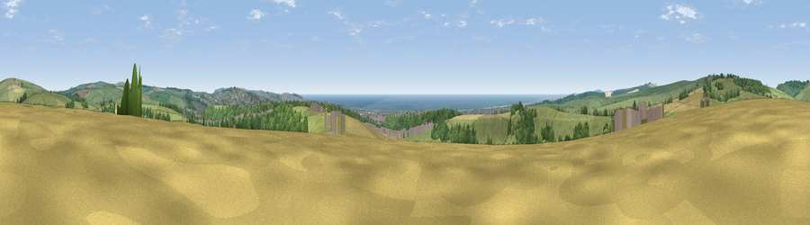

Viewpoint near Patcham
#4443 in England · top 20% of its area beats it · near PatchamWhere it is
The exact computed spot (TQ 27674 09020). Click the marker for map links.
The view, rendered

A 360° render of this exact spot computed from the terrain model, tree cover and land cover — summer colours, afternoon light, calibrated against photographs of famous viewpoints. Real trees, hedges and buildings will differ in detail.
The panorama
Grey silhouette: terrain skyline in each direction (720 bearings, Earth curvature and refraction included). Dashed green: skyline with trees (+15 m) and buildings (+8 m) as obstacles. Blue strip: how far the ground is visible on each bearing.
Where the view opens
Wedge length = distance to the farthest visible ground on that bearing (vegetation-aware). Rings at 10, 25 and 50 km.
What fills the view
50% grassland · 17% woodland · 12% water · 12% cropland · 9% built-up
Angular shares of the visible panorama (visual magnitude), not map area. Landscape diversity 0.60 (0–1 Shannon).
Key numbers
More beautiful places nearby
The staircase of upgrades: each row has a higher view potential than everything closer. Driving times are estimates from straight-line distance, calibrated against real road routing — check an actual route before setting out.
| Place | Direction | Drive | Score |
|---|---|---|---|
| Devil's Dyke | NW · 3 km | ~7 min | 81.2 |
| Fulking Hill | NW · 3 km | ~7 min | 82.2 |
| Viewpoint near Steyning | WNW · 13 km | ~23 min | 82.6 |
| Chanctonbury Ring | WNW · 14 km | ~25 min | 87.0 |
| Firle Beacon | E · 21 km | ~35 min | 88.9 |
| Viewpoint near Niton | WSW · 85 km | ~109 min | 89.2 |
| Viewpoint near West Bexington | W · 174 km | ~195 min | 89.5 |
| The Knoll | W · 175 km | ~196 min | 91.0 |
50.86660, -0.18705 · source: osm peak · position refined by local search. Computed location — check access rights before visiting.